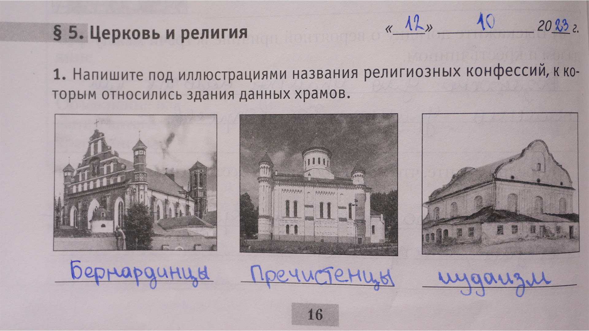

1. |
|  |
2. |
|
3. |
|
4.Оьъясните. |
В связи с тем, что изначально Витовт поселил татар, а потом они появились и в других местностях, включая Клецк. |
5.Подтвердите с помощью исторических фактов, что ВКЛ являлось многоконфессиональным государством |
ВКЛ (Великое княжество Литовское) действительно было многоконфессиональным государством. В период с 14 по 18 века, ВКЛ принимало евреев, православных и католиков, а также татар и караимов.
-- Евреи: Поддержка великих князей литовских еврейскому населению была очень выгодна для экономики государства. Евреи имели определенные привилегии, такие как свобода вероисповедания, возможность заниматься торговлей и банковским делом. Они создавали свои общины (кагалы) и вносили значительный вклад в экономическое развитие ВКЛ. |
-- Православные: Часть населения ВКЛ исповедовала православие. В 1387 году великий князь Ягайло принял христианство и стал католиком, однако он не запрещал православие и даже создал особую организацию, называемую православной церковной унией, которая объединяла православных верующих. |
-- Католики: Католицизм был основным религиозным течением в ВКЛ. В 1386 году великий князь Ягайло вступил в брак с польской королевой Ядвигой Анжуйской, и это стало началом объединения ВКЛ с Королевством Польским в союз Литовско-Польской Короны. Католическая церковь получила значительное влияние и поддержку от правительства. |
-- Татары и караимы: ВКЛ также принимало мусульманских татар и караимов, которые исповедовали ислам и караимскую веру соответственно. Татары обычно занимались ремеслами и торговлей, а караимы были известны своими знаниями в области юриспруденции и лингвистики. |
Таким образом, присутствие различных конфессий в ВКЛ свидетельствует о его многоконфессиональности. Это разнообразие вероисповеданий способствовало развитию торговли, финансовому укреплению и экономическому развитию государства. |
|
6.Докажите, что католики главенствовали в политической жизни ВКЛ |
--Католическая церковь была официальной религией ВКЛ. Великое княжество Литовское было католическим государством, и католическая церковь играла важную роль в политической и социальной жизни страны. Короли и великие князья ВКЛ, такие как Ягайло и Ягеллончик, были католиками и поддерживали католическую церковь. |
-- Католицизм был преобладающей религией среди высшего слоя общества ВКЛ. Аристократия и дворянство ВКЛ, которые составляли политическую элиту страны, в основном были католиками. Они занимали важные политические должности, включая должности великих князей, канцлеров и советников. |
-- Католическая церковь имела значительное влияние на законодательство и правосудие ВКЛ. Католические духовные лица и монастыри имели свои суды и правовые привилегии. Католическая церковь также играла важную роль в образовании и культуре ВКЛ. |
--Религиозная терпимость в ВКЛ была ограничена. Хотя ВКЛ было многоконфессиональным государством, католицизм был признан официальной религией, и другие религии, включая православие, ислам и иудаизм, имели ограниченные права и привилегии. Католическая церковь имела преимущества в области образования, судопроизводства и политического влияния. |
|
7.Объясните причинно-следственную связь в логической цепочке. Поддержка великими князьями литовскими переселения еврейского населения - финансовое укрепление ВКЛ |
С них собирали большие налоги, а ещё Евреи, переселяясь в ВКЛ, привносили с собой свои знания и навыки в различных областях, таких как торговля, финансы и ремесла. Они становились активными участниками экономической жизни ВКЛ, способствуя развитию торговли и промышленности.
Благодаря этому, ВКЛ получало дополнительные источники доходов. Евреи часто занимались денежными займами и торговлей, что способствовало развитию финансовой сферы и укреплению экономической позиции государства.
Таким образом, поддержка великими князьями литовскими переселения еврейского населения приводила к притоку финансовых ресурсов и укреплению экономики ВКЛ. |
8.Представьте себя на месте князя ВКЛ. Каким было бы ваше отношение к идее заключени |
Положительное, ведь при заключении этой унии не будет конфликтов и войн между этими двумя церквями. |